Manual del administrador del comercio
kaja-bo es la página web donde el administrador configura su comercio y sigue lo que pasa en las terminales. Este manual recorre cada sección en el orden en que conviene usarlas.
- Ingresar
- Cómo está organizada la pantalla
- Usar kaja-bo desde el celular
- Puesta en marcha
- Sucursales
- Productos
- Stock
- Promociones
- Cajeros
- Terminales
- Temas de kaja
- Módulos
- Mesas
- Eventos y entradas
- Facturación electrónica (UCFE)
- Ventas
- Caja
- kaja-web: vender desde kaja-bo
- Conciliación
- Reportes
Ingresar
Entrá a la dirección de kaja-bo con tu correo y la clave temporal que te pasó el superadmin.
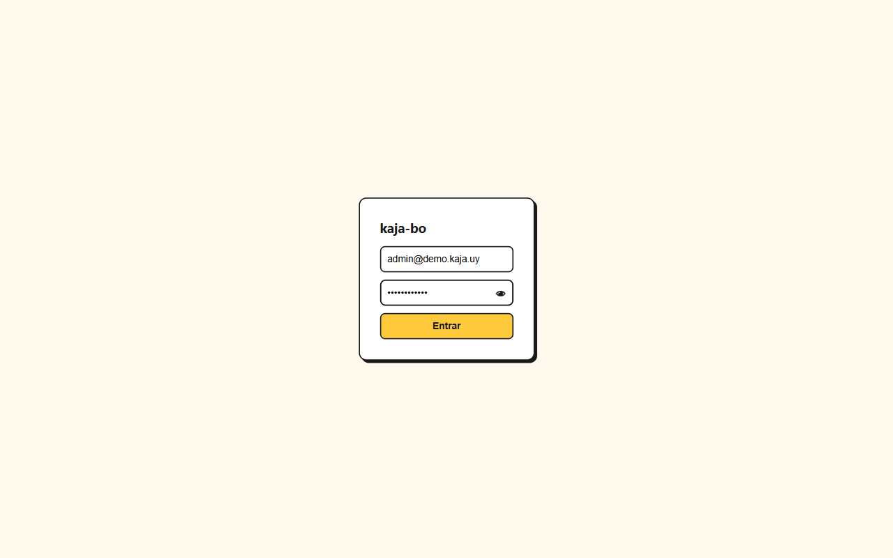
Con ese mismo usuario (admin) y esa clave también podés entrar a la app de la terminal.
Cómo está organizada la pantalla
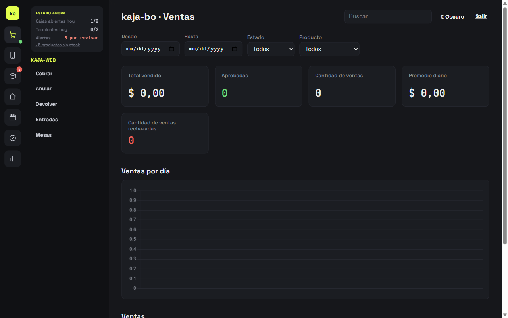
- Barra de íconos (izquierda): agrupa las secciones. De arriba hacia abajo: Operación (ventas, caja, terminales, mesas, temas, módulos), kaja-web (cobrar, anular, devolver, entradas, mesas), Catálogo (productos, promociones, stock), Gente (sucursales, cajeros), Eventos, Fiscal (UCFE, conciliación) y Reportes. Al tocar un ícono aparecen sus pestañas al lado.
- Estado ahora: el recuadro de arriba a la izquierda muestra cuántas cajas están abiertas hoy, cuántas terminales reportaron y las alertas pendientes (diferencias de caja sin revisar, cajas sin cerrar de otro día, productos sin stock). Tocá una alerta para ir a resolverla.
- Buscar: filtra las filas de las tablas de la pestaña que estás viendo (productos, cajeros, terminales, ventas, caja…).
- Oscuro / Claro: cambia los colores de la página.
- Salir: cierra la sesión.
Usar kaja-bo desde el celular
kaja-bo también se usa desde el navegador del celular. En una pantalla chica la barra de íconos se esconde: el botón ☰ (arriba a la izquierda) abre el menú con todas las secciones agrupadas, como el menú de la terminal, y se cierra solo al elegir una.
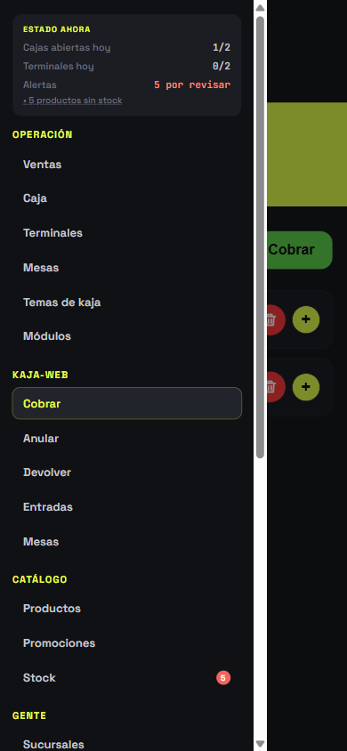
La pantalla de Cobrar se ve igual que la venta de la terminal (ver kaja-web), y los gráficos de los reportes se ajustan al ancho del teléfono.
Puesta en marcha
Para un comercio nuevo, cargá todo en este orden:
- Sucursales: cada local físico.
- Productos: el catálogo con precio y código de barras.
- Stock: cuántas unidades hay de cada producto en cada local.
- Cajeros: los usuarios que van a vender en las terminales.
- UCFE: los datos de facturación electrónica.
- SystemId de ITD: el identificador que da Fiserv para cobrar con tarjeta.
- Configurá cada terminal con el QR (manual del cajero) y después asignala a su local en Terminales.
Sucursales
Gente → Sucursales. Cada sucursal es un local. La dirección sale impresa en el ticket de las ventas de ese local.
- Escribí el Nombre y la Dirección.
- Tocá Crear.
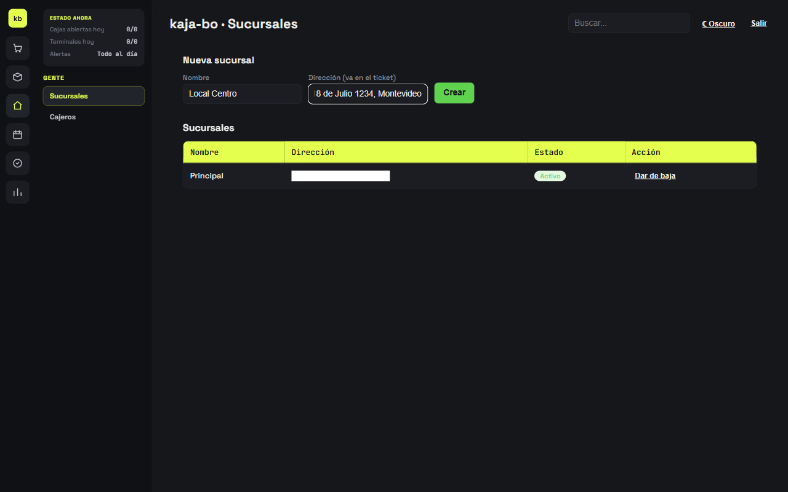
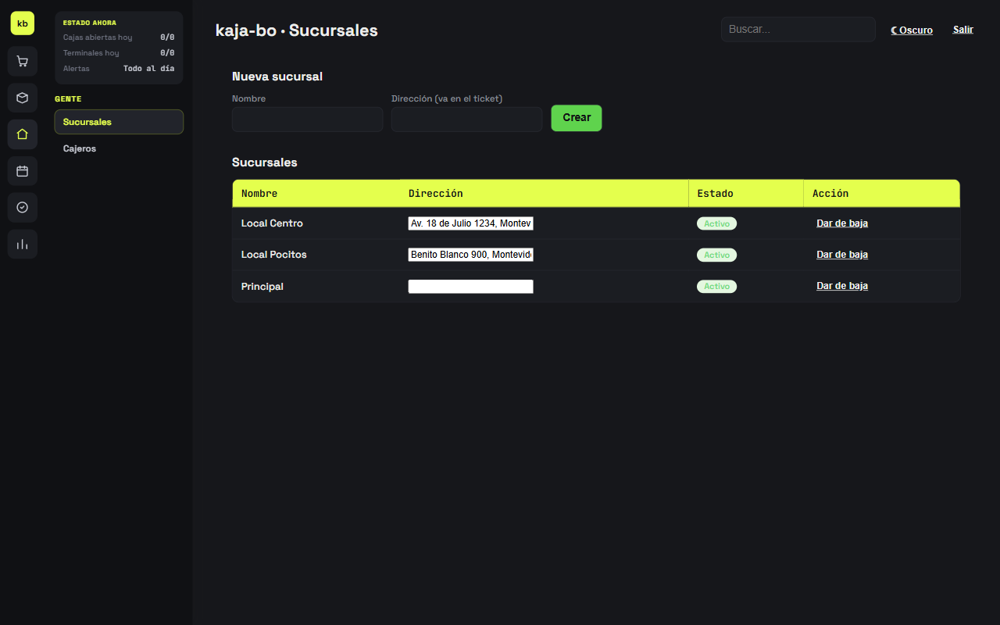
Todo comercio arranca con una sucursal Principal. Podés usarla o crear las tuyas.
Productos
Catálogo → Productos.
- Escribí el Nombre, el Precio y el Código de barras (es el que lee el escáner de la terminal; si el producto no tiene, dejalo vacío y el cajero lo busca por nombre).
- Tocá Crear.
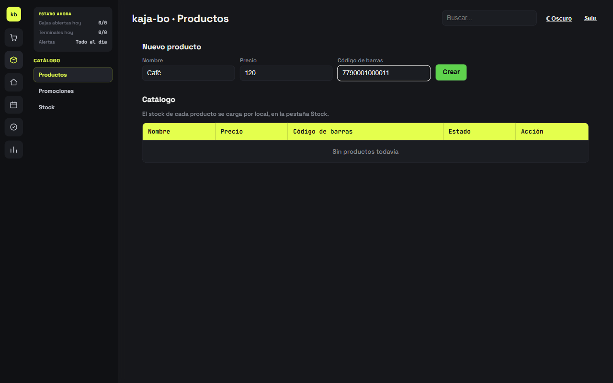
En el Catálogo podés cambiar el precio o el código de barras de un producto y tocar Guardar, o tocar Dar de baja para que deje de aparecer en las terminales.
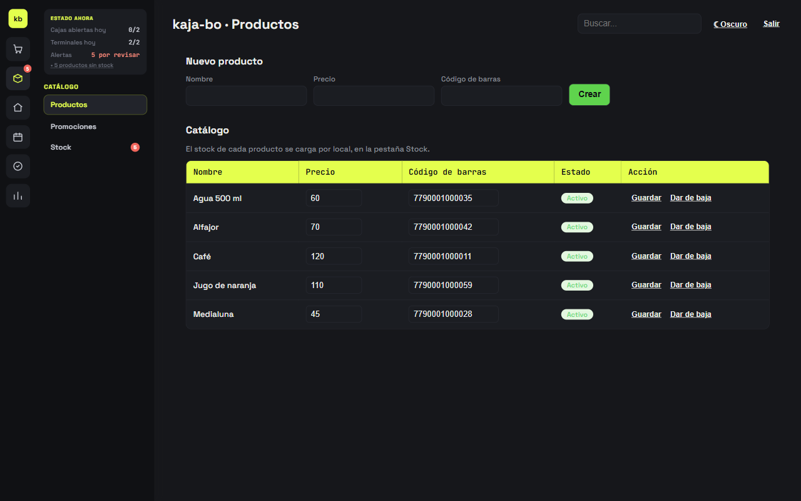
Los cambios llegan solos a las terminales en su próxima sincronización (cada 15 minutos, o enseguida si el cajero toca "Reportar terminal a kaja-bo" en Configuración).
Stock
Catálogo → Stock. El stock se lleva por local: cada sucursal tiene sus propias cantidades.
- En Local, elegí la sucursal.
- Escribí la cantidad de cada producto y tocá Guardar en su fila.
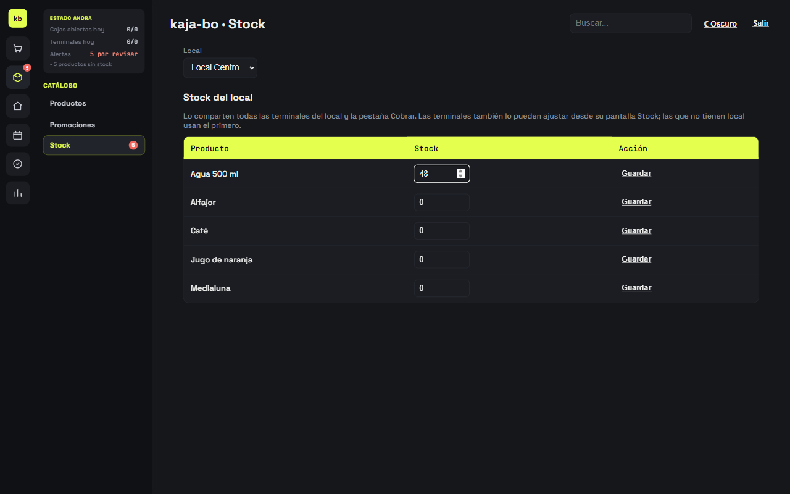
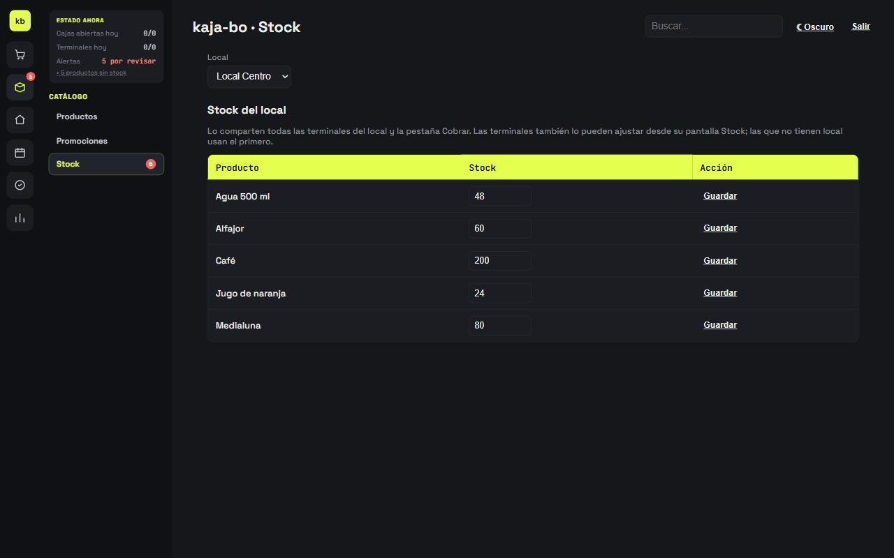
Cada venta descuenta el stock del local de la terminal que vendió. Los productos que llegan a cero aparecen en las alertas ("productos sin stock") y en el reporte de Catálogo.
Promociones
Catálogo → Promociones. Las promociones son del tipo "llevá N, pagá M" (por ejemplo, 3x2) sobre un mismo producto. Se aplican solas en las terminales y en Cobrar, y el ticket muestra el nombre de la promoción.
- Nombre: es lo que sale en el ticket (por ejemplo, "3x2 en alfajores").
- Llevá y Pagá: la cantidad que se lleva y la que se cobra.
- Productos: marcá a qué productos se aplica.
- Sucursales: marcá en qué locales vale. Si no marcás ninguna, vale en todas.
- Desde y Hasta: las fechas de vigencia (el "hasta" incluye ese día).
- Días, De y A (opcionales): para que valga solo ciertos días de la semana o en cierto horario. Sin marcar, vale todos los días y todo el día.
- Tocá Crear.
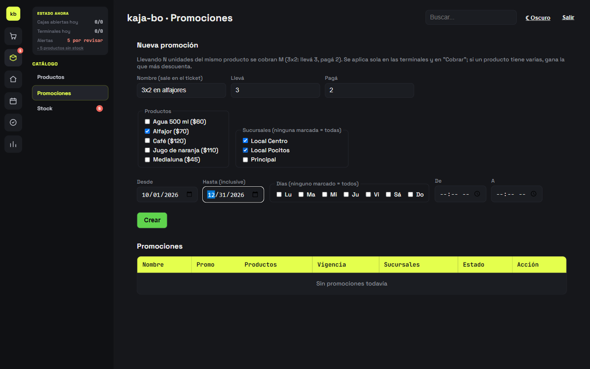
Si a un producto le corresponden varias promociones a la vez, se aplica la que más descuenta.
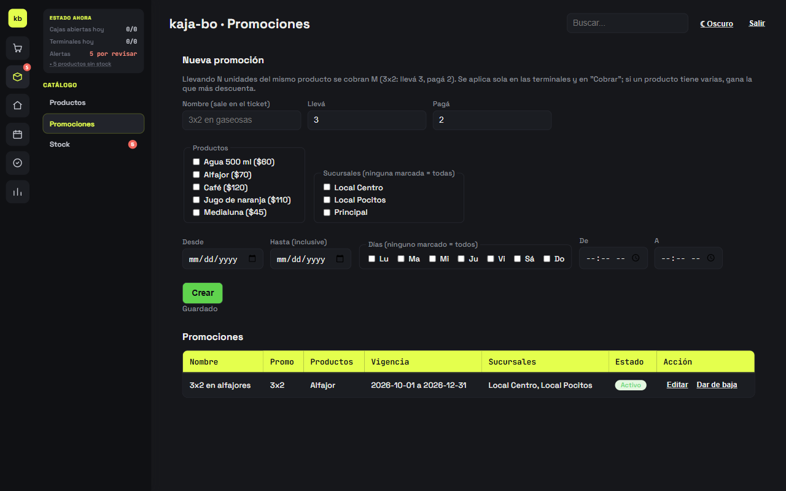
Cajeros
Gente → Cajeros. Los cajeros son los usuarios que ingresan a la app de la terminal.
Un cajero puede tener usuario de dos formas: lo creás vos acá, o lo pide él desde la terminal y vos lo aprobás. En los dos casos, el cajero verifica su correo con un código de 8 dígitos que le llega por mail.
Crear un cajero
- Completá Usuario (con el que ingresa a la terminal), Nombre a mostrar, Correo y Contraseña.
- Tocá Crear.
- Pasale al cajero su usuario y su contraseña.
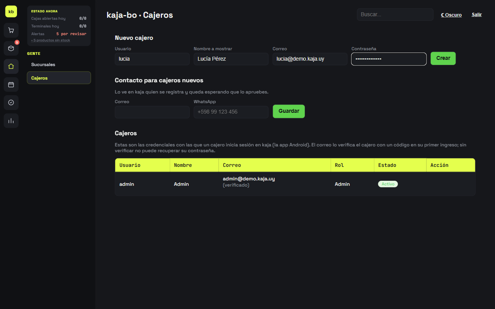
El cajero aparece en la lista como Activo y con el correo (sin verificar). La primera vez que ingrese a la terminal, la app le manda un código a ese correo y le pide cargarlo (cómo lo ve el cajero). Desde ahí el correo figura como (verificado). Sin el correo verificado no puede recuperar su contraseña.
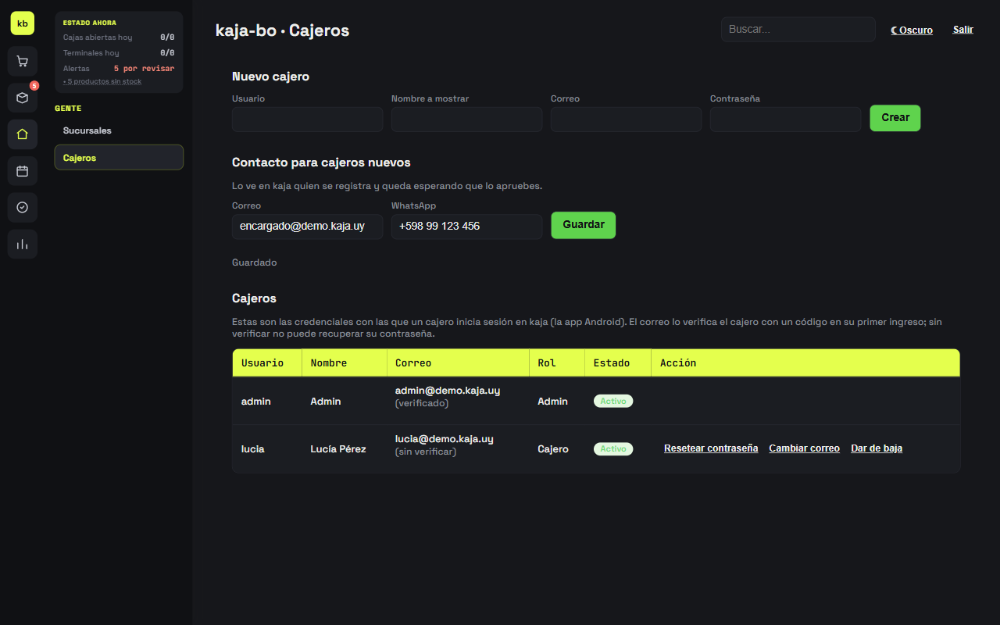
Cajeros que piden usuario desde la terminal
Un cajero nuevo también puede pedir su usuario desde la pantalla de ingreso de la terminal, con "¿No tenés usuario? Pedilo" (cómo lo ve el cajero). Después de verificar su correo, aparece en la lista como Pendiente, con los botones Aprobar y Rechazar. Hasta que lo apruebes no puede ingresar.
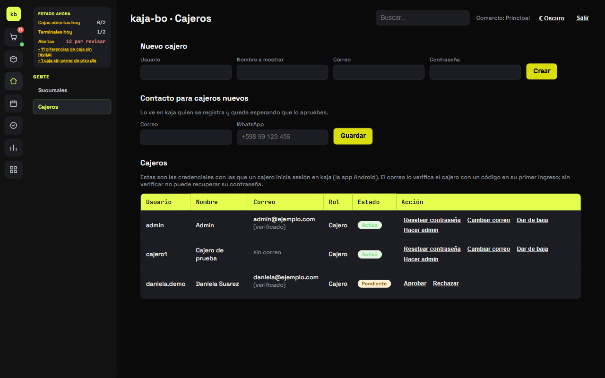
Al tocar Aprobar queda Activo y ya puede ingresar con el usuario y la contraseña que eligió. Rechazar descarta la solicitud.
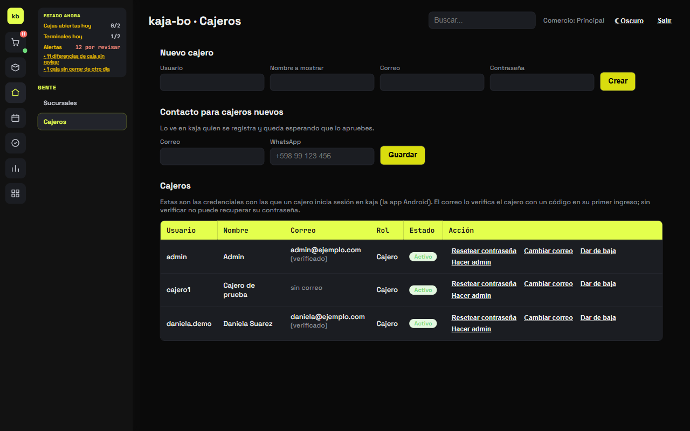
En Contacto para cajeros nuevos cargá un correo y/o un WhatsApp: la terminal se los muestra a quien pidió usuario para que te avise.
Otras acciones
- Resetear contraseña: te pide una contraseña nueva para ese cajero y la guarda. Pasásela al cajero.
- Cambiar correo: cambia el correo (tendrá que verificarlo de nuevo).
- Dar de baja: el cajero deja de poder ingresar.
Para que otro usuario sea administrador, pedíselo al superadmin: solo él puede nombrar administradores.
Terminales
Operación → Terminales. Cada terminal aparece acá sola la primera vez que se conecta con kaja-bo (después de escanear el QR y tocar "Reportar terminal a kaja-bo").
Asigná cada terminal a su sucursal con la lista de la columna Sucursal. De eso depende de qué local descuenta stock, qué dirección sale en el ticket y qué promociones se aplican.
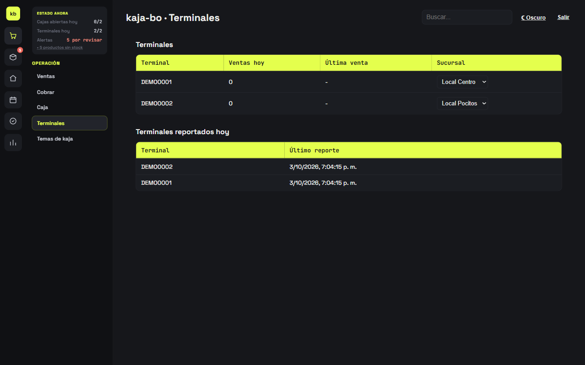
Terminales reportados hoy muestra la última vez que cada terminal se comunicó: si una terminal no aparece, revisá que tenga conexión.
Temas de kaja
Operación → Temas de kaja. Un tema define los colores, el logo y los textos de la app en las terminales y en el ticket impreso.
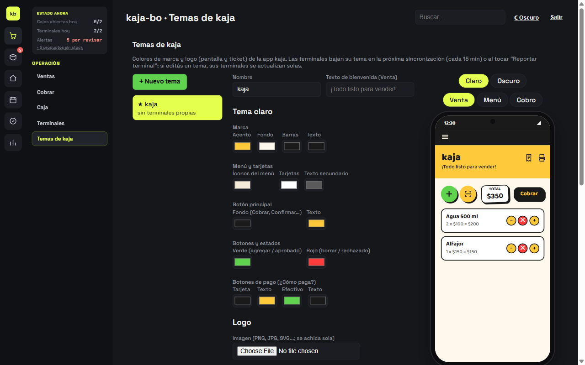
- + Nuevo tema crea un tema; a la izquierda están los existentes (el marcado con ★ es el predeterminado).
- Texto de bienvenida: el título de la pantalla de Venta.
- Tema claro / Tema oscuro: los colores de cada variante (el cajero elige claro u oscuro en la terminal). A la derecha se ve una vista previa de cómo queda en el celular (Venta, Menú y Cobro).
- Logo: la imagen que sale en la app y en el ticket.
- Ticket: el mensaje de despedida al pie del ticket.
- Terminales: marcá terminales y tocá Enviar este tema a las marcadas para que usen este tema; Quitar tema propio a las marcadas las vuelve al predeterminado. Usar como predeterminado lo aplica a todas las terminales sin tema propio.
Las terminales bajan su tema en la próxima sincronización (cada 15 minutos) o al tocar "Reportar terminal a kaja-bo".
Módulos
Operación → Módulos. Prende o apaga las partes opcionales de kaja-bo y de la app:
- Eventos: venta y control de entradas.
- Mesas: cuentas compartidas entre mozos, pagos divididos y propinas (para restaurantes).
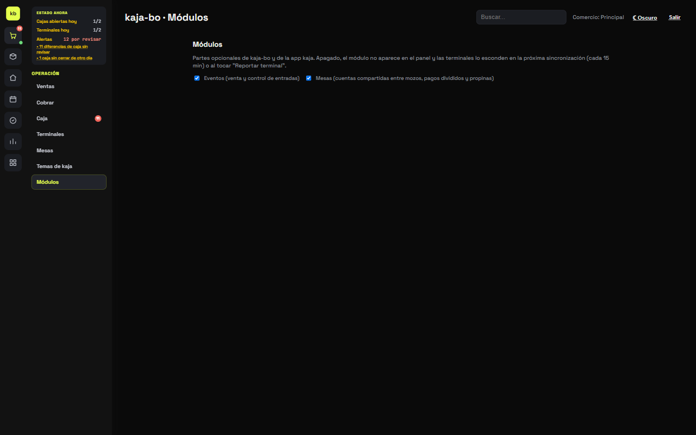
Un módulo apagado no aparece en kaja-bo, y las terminales lo esconden del menú en su próxima sincronización (cada 15 minutos, o enseguida si el cajero toca "Reportar terminal a kaja-bo").
Mesas
Operación → Mesas. Para restaurantes: cada local tiene sus mesas, y los mozos les cargan productos desde cualquier terminal de ese local. Primero prendé el módulo Mesas en Módulos.
- En Local, elegí la sucursal.
- Escribí el Nombre de la mesa (por ejemplo, "Mesa 1" o "Terraza 2").
- Tocá Crear.
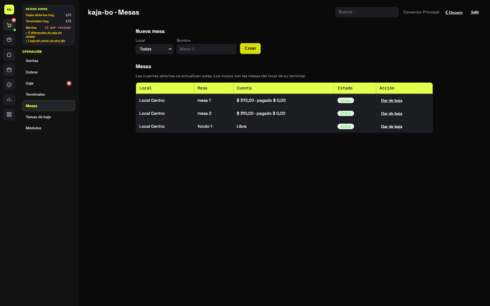
La tabla muestra cada mesa con su Cuenta: Libre, o el total consumido y cuánto se pagó hasta ahora. Se actualiza sola. Dar de baja saca la mesa de las terminales (si tiene una cuenta abierta, sigue hasta que se cierre).
Cada terminal ve las mesas del local al que está asignada en Terminales: una terminal sin local no ve ninguna.
Cómo se usan en la terminal (abrir la mesa, cargar productos, cobrar por partes con propina y cerrar): ver el manual del cajero. Al cerrar la mesa sale un solo comprobante con todos los productos y se descuenta el stock del local. Las propinas de cada mozo se ven en el reporte Propinas.
Las mesas también se pueden atender desde la computadora o el celular, en kaja-web → Mesas.
Eventos y entradas
Eventos. Sirve para vender entradas (con QR) y controlarlas en la puerta con la terminal.
Crear un evento
Completá Nombre, Fecha, Precio y cantidad de Entradas, y tocá Crear.
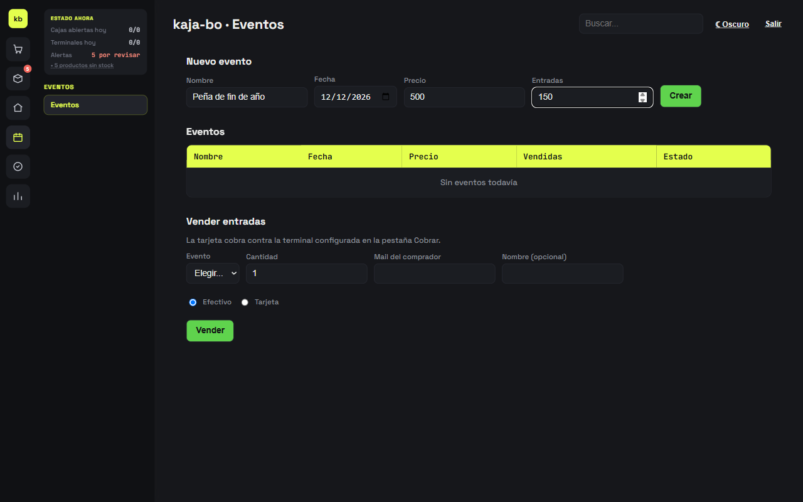
La tabla Eventos muestra cada evento con su fecha, precio y cuántas entradas se vendieron.
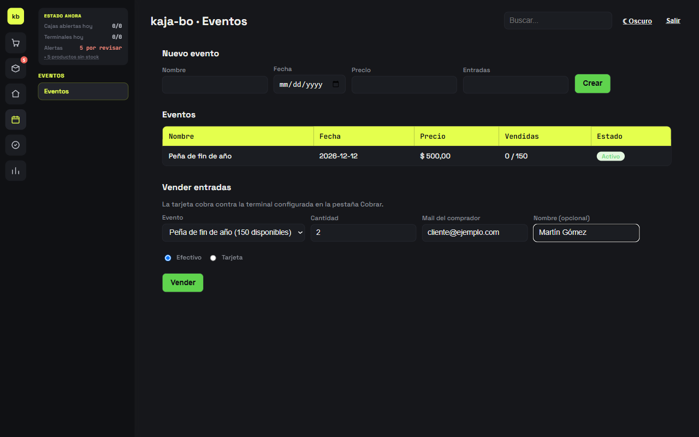
Las entradas se venden desde kaja-web → Entradas, y también se venden y se controlan desde la terminal (manual del cajero).
Facturación electrónica (UCFE)
Fiscal → UCFE. Acá van los datos que Uruware asigna al dar de alta el comercio en UCFE, y los datos del emisor que salen en cada comprobante.
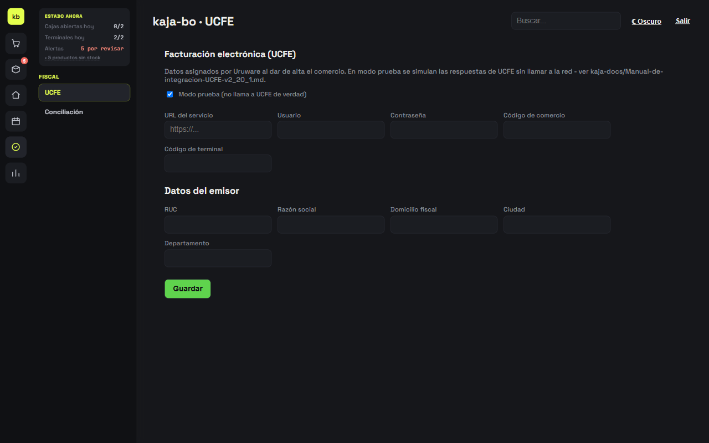
- Modo prueba: con la casilla marcada no se llama a UCFE de verdad (se simulan las respuestas). Desmarcala recién cuando tengas los datos reales.
- URL del servicio, Usuario, Contraseña, Código de comercio, Código de terminal: los da Uruware.
- Datos del emisor: RUC, razón social, domicilio fiscal, ciudad y departamento.
Tocá Guardar. La razón social y el RUC llegan solos a las terminales para el ticket.
Ventas
Operación → Ventas. El resumen de todas las ventas: total vendido, aprobadas, cantidad, promedio diario y rechazadas, el gráfico por día y el detalle por sucursal. Filtrá por fechas (Desde / Hasta), Estado o Producto.
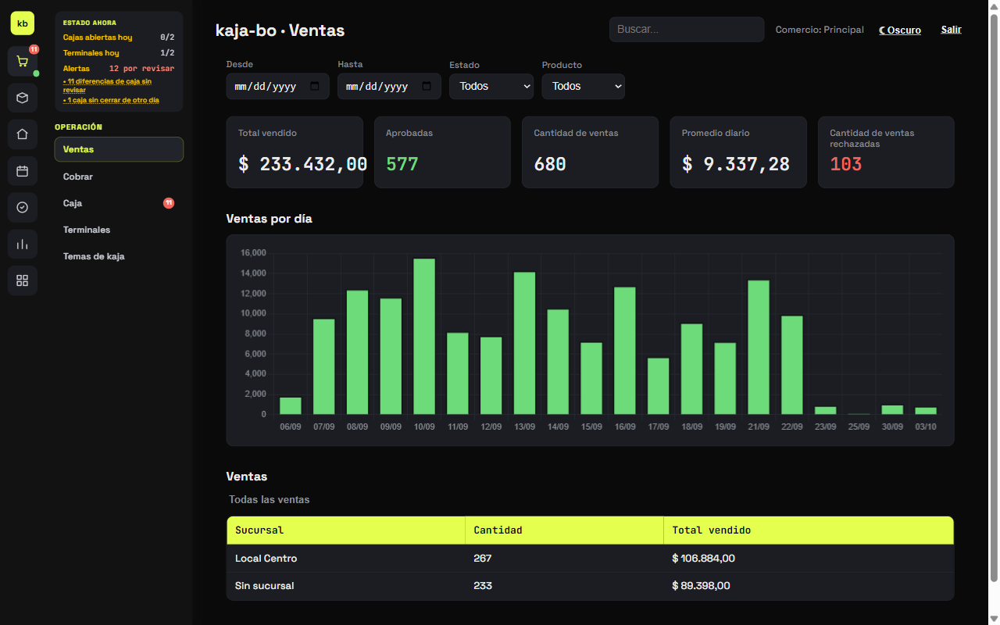
Caja
Operación → Caja. Todas las aperturas y cierres de caja de las terminales: monto inicial, cuánto contó el cajero al cerrar, cuánto se esperaba y la diferencia.
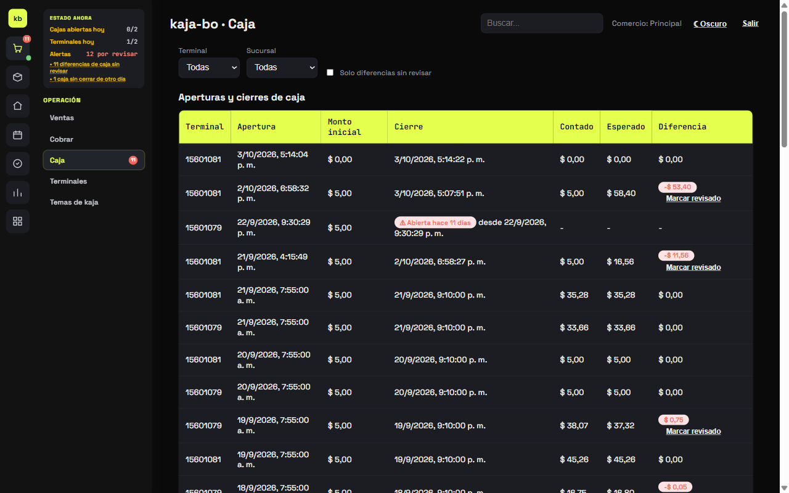
- Las diferencias distintas de cero aparecen en rojo con Marcar revisado: tocalo cuando ya lo hayas controlado y deja de contar como alerta.
- Una caja abierta de días anteriores aparece con el aviso "Abierta hace N días".
- Filtrá por Terminal o Sucursal, o marcá Solo diferencias sin revisar.
kaja-web: vender desde kaja-bo
kaja-web son las pantallas de la terminal, pero en kaja-bo: Cobrar, Anular, Devolver, Entradas (con el módulo Eventos) y Mesas (con el módulo Mesas). Sirven para vender desde una computadora o un celular, contra una terminal de cobro del comercio.
- Quién las usa: el administrador, y también los cajeros: entrando a kaja-bo con su correo y la misma contraseña de la terminal, un cajero ve solo kaja-web (nada de reportes, productos ni configuración).
- La terminal elegida: todas cobran con tarjeta en la terminal que se elige en Cobrar → Configurar terminal. La terminal muestra el cobro sola, no hace falta estar al lado. Anular, Devolver, Entradas y Mesas muestran arriba cuál es.
- Caja abierta: para cobrar, esa terminal tiene que tener la caja abierta.
Cobrar
kaja-web → Cobrar. Buscá los productos por nombre o código de barras y agregalos al carrito; ajustá las cantidades con − y + o sacalos con Quitar. Las promociones se aplican solas. Tocá Cobrar y elegí Efectivo o Tarjeta.
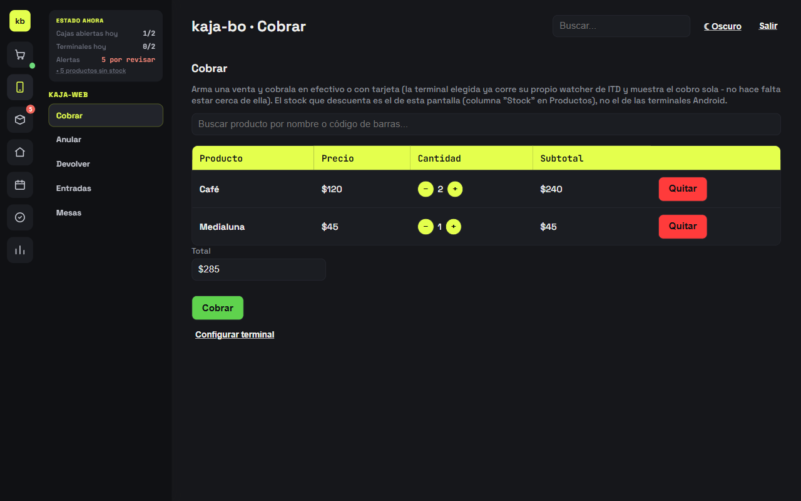
Antes de usarla por primera vez tocá Configurar terminal y elegí con qué Terminal se cobra. El stock que se descuenta es el del local de esa terminal.
- Lector de códigos de barras: en la computadora funciona un lector de mano (USB o Bluetooth). Al abrir Cobrar el buscador ya queda listo: cada lectura agrega el producto con ese código exacto.
- En el celular: la pantalla es igual a la venta de la terminal: botón + para buscar productos, el TOTAL y Cobrar, y cada producto con −, el tacho y +. En Android, con kaja-bo abierto en una dirección
https://, aparece también el botón de escanear con la cámara.

SystemId de ITD (cobros con tarjeta)
En ese mismo panel de Configurar terminal están los datos de ITD (Fiserv), el procesador de las tarjetas:
- Modo prueba: con la casilla marcada se simula la aprobación sin llamar a ITD de verdad.
- URL base y SystemId: los asigna Fiserv al comercio.
Tocá Guardar. El SystemId se configura solo acá: las terminales lo bajan solas de kaja-bo, el cajero no lo carga.
Anular
kaja-web → Anular. Anula una venta con tarjeta del lote abierto (antes del cierre de Fiserv de las 23 h). Escribí el número de Ticket y tocá Anular. Se anula contra la terminal elegida en Cobrar, que tiene que ser la misma que hizo el cobro.
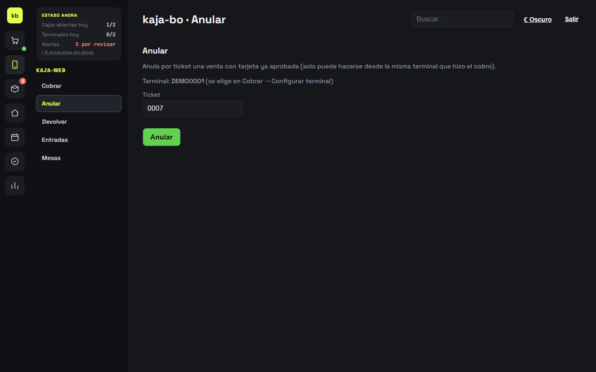
Devolver
kaja-web → Devolver. Devuelve, total o en parte, una venta con tarjeta de un lote ya cerrado (para el lote abierto usá Anular). Completá el Ticket, la Fecha de la venta y, si es una devolución parcial, el Monto (vacío = el total). Se emite la nota de crédito; si se devuelve el total, se repone el stock.
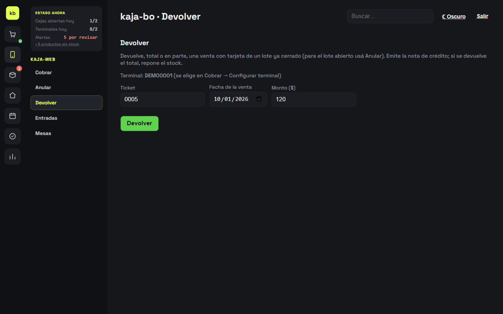
Entradas
kaja-web → Entradas. Elegí el Evento, la Cantidad, el Mail del comprador (le llegan las entradas con su QR), opcionalmente el Nombre, la forma de pago y tocá Vender. Los eventos se crean en Eventos.
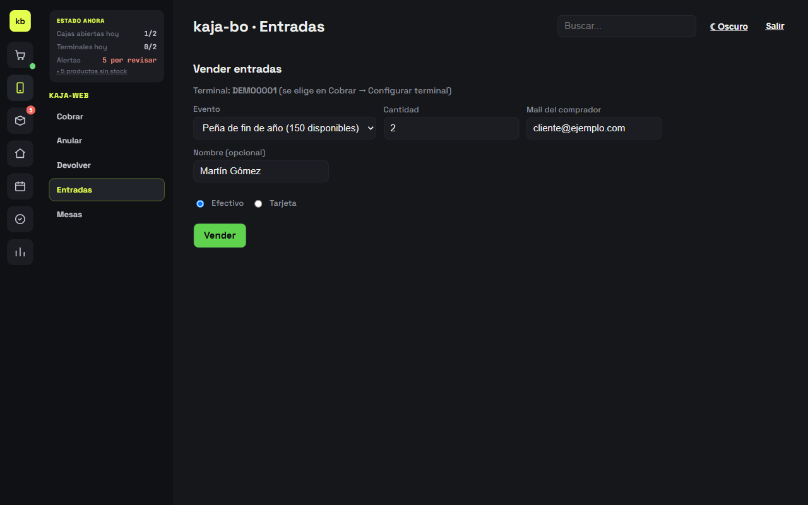
Mesas desde kaja-web
kaja-web → Mesas. Se atienden las mesas del local de la terminal elegida, igual que en la terminal: varios mozos pueden cargar la misma mesa a la vez, desde la web o desde las terminales. Las mesas se crean en Operación → Mesas.
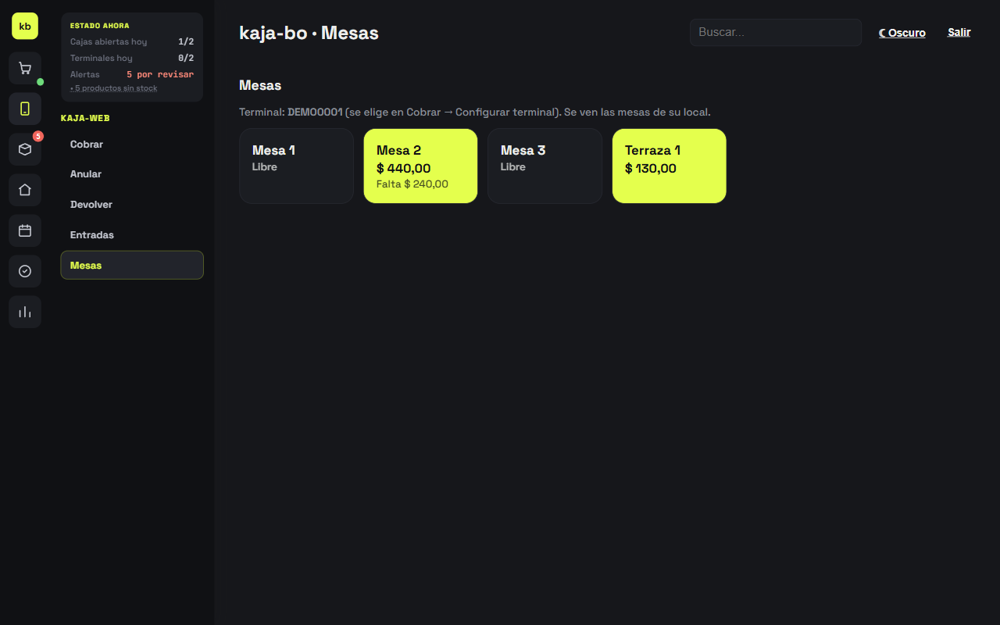
Las mesas ocupadas se ven resaltadas, con lo consumido y lo que falta pagar; las libres dicen "Libre". Tocá una mesa para abrirla:
- Agregar producto: buscalo por nombre o código de barras (también con el lector de mano). Cada producto suma uno a la cuenta.
- Quitar: saca un producto, salvo que ya se haya cobrado parte de él.
- La cuenta muestra el Total, lo Pagado, lo que se está Cobrando y lo que Falta pagar, con cada pago, su propina y quién lo cobró.
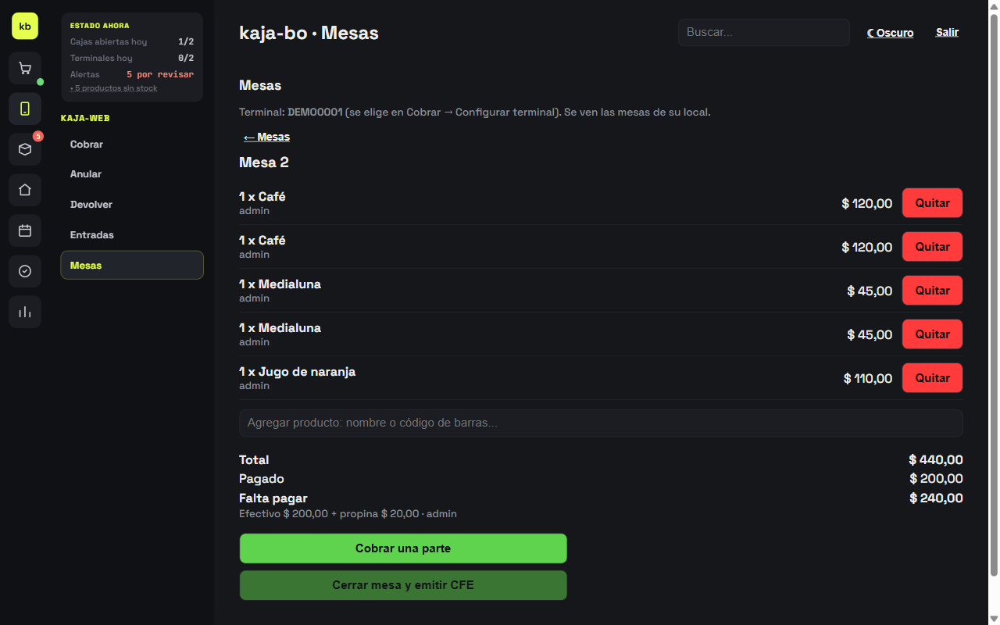
Cobrar una parte: escribí el Monto (por defecto, lo que falta), elegí la Propina (Sin, 10%, 15% u Otra para escribirla) y tocá Efectivo o Tarjeta. Con tarjeta se cobra en la terminal elegida, con la propina aparte. Nunca se puede cobrar más de lo que falta, aunque dos personas cobren la misma mesa a la vez.
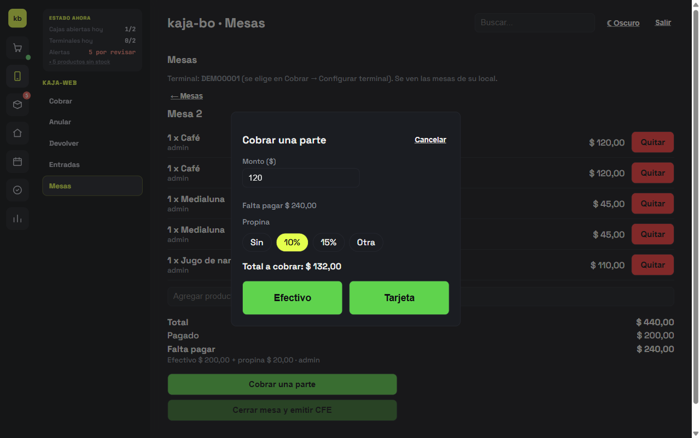
Si aparece "ITD no confirmó el cobro. Revisá el pinpad antes de volver a cobrar.", mirá en la terminal si el cobro salió antes de repetirlo: esa parte queda "cobrándose" unos minutos.
Con todo pagado, Cerrar mesa y emitir CFE emite un solo comprobante con todos los productos, descuenta el stock del local y deja la mesa libre. Una mesa sin productos (abierta por error) se cierra con Liberar mesa.
Límites de kaja-web
- No imprime: kaja-web emite el comprobante electrónico, pero no imprime ticket.
- Arqueo de la terminal: el efectivo que se cobra desde kaja-web no entra en el arqueo que hace la terminal al cerrar la caja.
Conciliación
Fiscal → Conciliación. Compara las ventas con tarjeta que tiene kaja-bo contra lo que ITD (el procesador de tarjetas) confirma. Solo informa diferencias: no cambia ninguna venta.
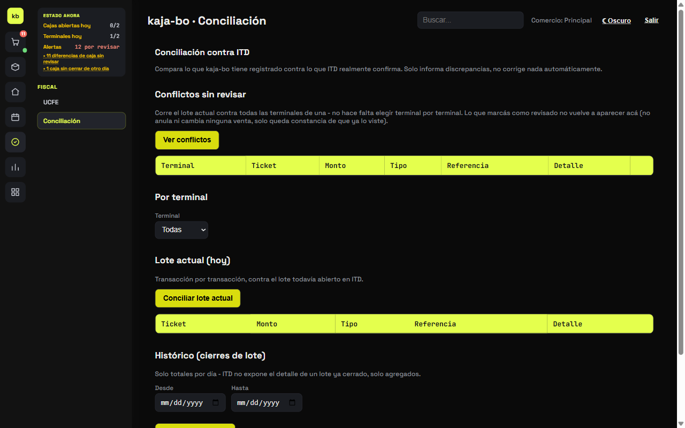
- Ver conflictos: revisa el lote actual de todas las terminales y lista las diferencias. Lo que marcás como revisado no vuelve a aparecer.
- Lote actual (hoy): compara transacción por transacción contra el lote abierto, de una terminal o de todas.
- Histórico: compara los totales por día de lotes ya cerrados.
Reportes
Reportes tiene seis pestañas:
| Pestaña | Qué muestra |
|---|---|
| Ventas y crecimiento | Ingresos aprobados, ticket promedio, tasa de aprobación, ingresos por día y efectivo contra tarjeta. |
| Catálogo | Los 5 productos que más facturan y los que más unidades venden, y los productos sin stock. |
| Sucursales y cajeros | Ingresos por sucursal, ticket promedio por cajero y diferencias de caja acumuladas por terminal. |
| Operativo | Estado de las ventas por terminal (aprobadas, rechazadas, pendientes). |
| Eventos | Ingresos y aforo vendido por evento, y el detalle de entradas. |
| Propinas | Por cajero: cuántos pagos de mesas cobró, el monto cobrado (sin la propina) y la propina. Filtrá por Desde / Hasta. |
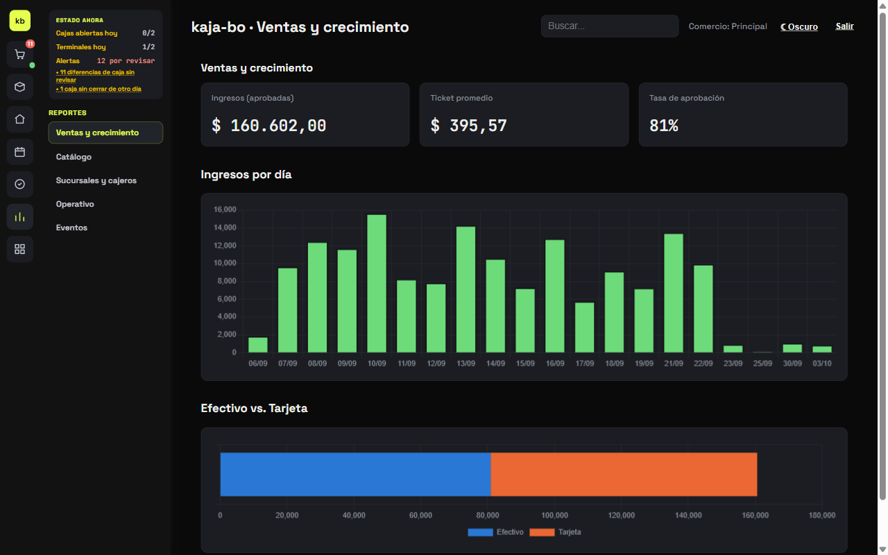
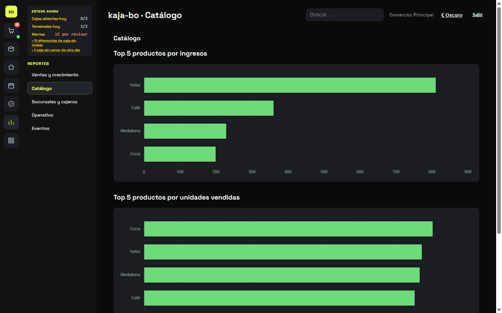
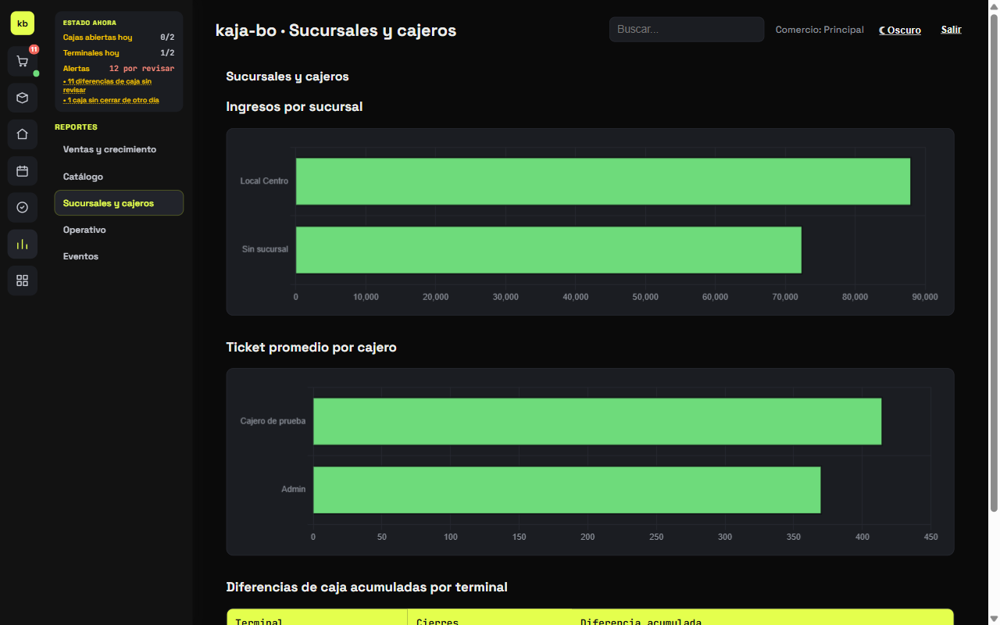
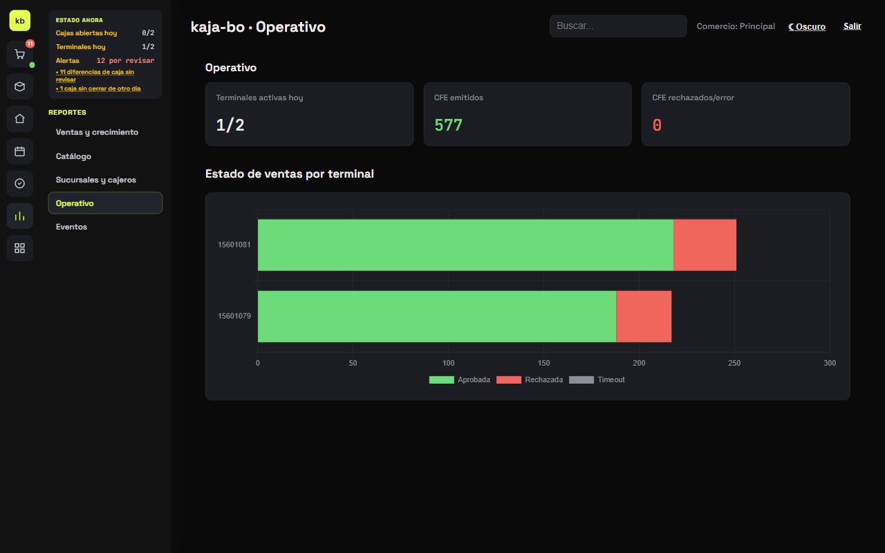
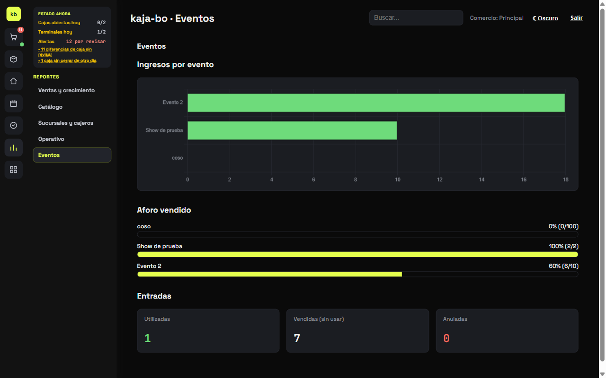
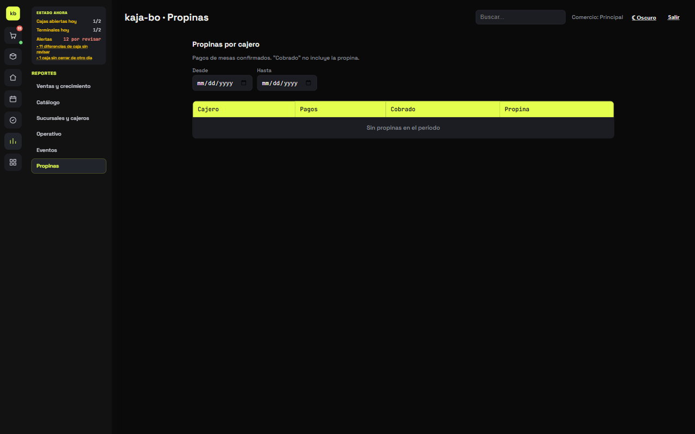